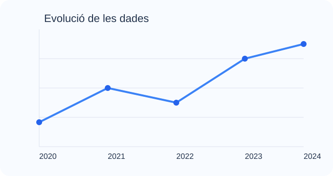

📈 Gràfics de línia
Matplotlib permet crear gràfics de línia per mostrar canvis al llarg del temps o evolucions de variables.
import matplotlib.pyplot as plt
x = [1, 2, 3, 4]
y = [2, 4, 6, 8]
plt.plot(x, y)
plt.show()Aprèn a crear gràfics clars i atractius per interpretar dades amb Python.
Matplotlib és la llibreria més utilitzada per crear gràfics a Python, mentre que Seaborn facilita visualitzacions més atractives i estadístiques.
Aquestes eines permeten mostrar tendències, comparacions i patrons en dades de manera molt visual. Són molt útils tant per a treballs acadèmics com per a presentacions i informes.
Normalment es combinen amb Pandas i NumPy per analitzar dades i després representar-les amb gràfics.
Matplotlib permet crear gràfics de línia per mostrar canvis al llarg del temps o evolucions de variables.
import matplotlib.pyplot as plt
x = [1, 2, 3, 4]
y = [2, 4, 6, 8]
plt.plot(x, y)
plt.show()Seaborn facilita representar dades categòriques amb gràfics de barres molt visuals i fàcils d'interpretar.
import seaborn as sns
import matplotlib.pyplot as plt
sns.barplot(x=['A', 'B', 'C'], y=[3, 5, 2])
plt.show()Aquestes llibreries permeten:
És molt habitual utilitzar-les després d'haver tractat dades amb NumPy i Pandas.
Aquest gràfic mostra com podem representar una sèrie de dades amb una línia clara i llegible.

Exemple de gràfic de línia amb eixos, títol i punts marcats.
import matplotlib.pyplot as plt
anys = [2020, 2021, 2022, 2023]
valor = [10, 15, 13, 20]
plt.plot(anys, valor, marker='o')
plt.title('Evolució de les dades')
plt.xlabel('Any')
plt.ylabel('Valor')
plt.show()Per instal·lar aquestes llibreries, podem fer servir:
pip install matplotlib seabornI després importar-les així:
import matplotlib.pyplot as plt
import seaborn as snsAixí podem començar a generar gràfics de forma senzilla.
Alguns exemples molt útils per entendre el potencial de la visualització de dades.
import matplotlib.pyplot as plt
anys = [2020, 2021, 2022, 2023]
valor = [10, 15, 13, 20]
plt.plot(anys, valor, marker='o')
plt.show()És ideal per mostrar l’evolució d’un valor al llarg del temps.
import seaborn as sns
import matplotlib.pyplot as plt
sns.scatterplot(x=[1, 2, 3, 4], y=[2, 4, 3, 5])
plt.show()Ajuda a veure relacions entre dues variables.
import seaborn as sns
import matplotlib.pyplot as plt
sns.barplot(x=['A', 'B', 'C'], y=[4, 7, 5])
plt.show()És perfecte per comparar categories o resultats.